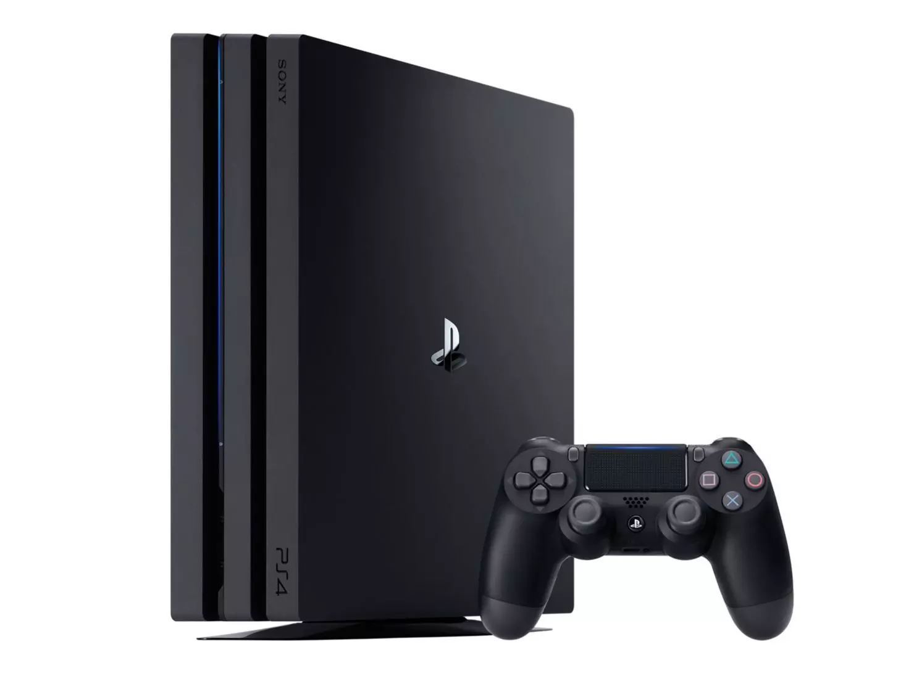

Los dispositivos electrónicos ya llevan años en nuestras vidas, desde su creación nos han resultado sumamente útiles, ayudando con distintas tareas y la comunicacion entre nosotros, nos mantienen divertidos y en un todo facilitan nuestra vida.
A cambio de esto pueden poseer un gran peligro o daño a nuestra salud sobre todo con su uso prolongado, este daño se extiende tanto a nuestro fisico como a nuestra mente.
A continuación daremos algunos dispositivos, sus ventajas y desventajas para generar conciencia y no caer presa bajo sus efectos nocivos.
Introducción
Principales Dispositivos

Como ventajas tenemos la utilidad que ofrecen, la mayoría de relojes ahora traen una aplicación que nos puede brindar mucha información útil de nuestra salud, frecuencia cardíaca, peso, y nuestra información nutricional volviendolos una herramienta muy útil para informarnos y tomar cuidado de nuestro cuerpo.
Como desventajas tenemos que pueden provocar irritación y alergias en los lugares donde hacen contacto y la gran dependencia que la gente muestra en los datos que entrega ya que estos no siempre son exactos.
Infórmate

Gracias a su tamaño, son bastante portátiles, por lo cual se pueden llevar a todos lados. Nos ofrecen una comunicación instantánea y efectiva, y son bastante útiles para el trabajo, ya que, debido a su portabilidad y potencia, se pueden realizar varias tareas.
Como desventajas, tenemos que el uso prolongado de los teléfonos provoca una adicción a estos, lo cual nos puede distraer, y un daño a nuestra visión, como la fatiga visual.
Infórmate

Ofrecen algunas ventajas muy parecidas a un telefono, la pantalla más grande nos ofrece una mejor visibilidad y suelen ser más potentes en cuanto a componentes pero debido a esto suelen ser más grandes y menos portables.
en cuando a desventajas son parecidas a las de un teléfono celular.
Infórmate

Las laptop son sumamente útiles debido a su portabilidad, su bajo costo y la gran eficiencia energetica, usualmente se utilizan para trabajar tanto de manera remota y personal.
Como desventajas tenemos su limitada potencia, sus limitadas opciones de personalización y como se sobrecalientan, dolores de espalda, mala postura y fatiga visual.
Infórmate

Las PC gracias a su potencia nos ayudan para varias tareas, tanto como trabajo o videojuegos, esto resulta beneficioso ya que puede ayudar con nuestra eficiencia a la hora de trabajar.
Como desventajas tenemos que gracias a su tamaño y gamma no son portables y usan bastante electricidad, además tenemos el daño que un mal monitor y una exposición continua nos puede generar a los ojos y el riesgo a nuestra información.
Infórmate

La popular y longueva consola posee varias ventajas como su bajo costo, su gran potencia y sus videojuegos exclusivos.
Como desventajas tenemos la adicción que crea, el agotamiento visual y sedentarismo.
Infórmate

La television ya lleva años en el mercado y en nuestra vida, sirviendo tanto como un medio de comunicacion y diversion.
Esto posee ventajas como que nos ayuda a aliviar el estres, a informarnos sobre temas importantes y ambiente para nuestro hogar.
Como desventaja se puede ver lo usual con pantallas, su uso prolongado daña nuestra visión, nos vuelve adictos a su consumo y la desinformación que algunos medios de comunicacion nos ofrecen.
Infórmate
¿Se debe regular el uso de los Dispositivos Electronicos?
Personalmente creemos que a pesar de la gran utilidad que los dispositivos electronicos nos brindan dia a dia estos como se sabe nos pueden causar un gran daño, tanto fisico como a nivel psicologico.
Para esto se debe regular el uso de los dispositivos electronicos, ya sea programando descansos a lo largo del dia y participando en actividades al aire que nos resulten beneficiosas a la salud.